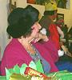

Click on Pictures for Links
Fay Daphne Angus
Fay was a writer, community activist, mother of two, and all around
sweet and likable person. She was born May 25th 1929 in Brisbane,
Australia, spent some time in a Japanese internment camp in China
during World War II, and lived a long and productive life in Sierra
Madre, California. She died very suddenly on February 17th 2016.
Ronald Allen Grygus
Master motorcycle mechanic and restoration craftsman.
Jon Martin Stringer
Jon Stinger had a particular interest in music, and was an avid collector
of recordings, particularly of early music (Medieval into Classical).
He organized music programs for the Music Group form many years. He was
also very interested in film noir, narrow gage steam railroads, and the
old Los Angeles Red Cars.
Andrew Joseph Grygus
OK, I confess, I'm not actually dead (2020), and don't expect to be dead
for some time (even though the paranoids are all plotting against me).
I'm starting my own memorial page now because I'm very confident nobody
else would ever get around to it. I can't get them to write up pages for
people who were actually important in their lives.
Denise Gail Vilay
Denise, by her own admission, lived a life of making bad decisions.
She spent much of her life homeless and living in her car, and at
her death, she was already pretty much forgotten, except by myself.
Here I have described her story, as well as I know it.
Alex Bratmon
Alex had a long career as an engineer in the
aerospace industry. He was also a long time participant in Musica
Donavania, and in past times hosted a number of Musica Donavania events.
Alex was also an avod Science Fiction fan.
Ron Cobb
Ron Cobb, one of the two true founders of Chesley Donavan Foundation -
from which Musica Donavania was derived, became a famous illustrator,
political cartoonist, and designer for Science Fiction / Fantasy motion
pictures.
Jon Lackey
Jon Lackey was a tall, imposing man. He was an artist of considerable
talent and ability, and very wide interests. He had a certain charisma
which attracted people to him. His ambitions were great, but often
thwarted by aspects of his own personality.